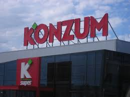
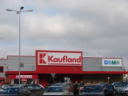

Ovo je paragraf
ovo je paragraf s linkom stranice skole
/Kevin Patrick Shields (born 21 May 1963) is an American-Irish musician, singer-songwriter, composer, and producer, best known as the vocalist and guitarist of the band My Bloody Valentine. My Bloody Valentine would become extremely influential on the evolution of alternative rock with their two studio albums Isn't Anything (1988) and Loveless (1991), both of which pioneered a subgenre known as shoegaze.[1] Shields's texturised guitar sound and his experimentation with his guitars' tremolo systems resulted in the creation of the "glide guitar" technique, which became a recognisable aspect of My Bloody Valentine's sound, along with his meticulous production techniques.[2] Following My Bloody Valentine's dissolution in the late 1990s, Shields became a frequent guest musician, producer, engineer, and remixer with various bands and artists, including Experimental Audio Research, Yo La Tengo, Dinosaur Jr, and Mogwai. In 1998 he became a touring member of Primal Scream. Shields contributed several original compositions to the soundtrack of Sofia Coppola's 2003 film Lost in Translation, which earned him nominations for British Academy of Film and Television Arts (BAFTA) and Irish Film and Television Academy (IFTA) awards.[3][4] In 2008, Shields released a collaborative live album together with Patti Smith entitled The Coral Sea. My Bloody Valentine reunited in 2007, and released their third studio album m b v in February 2013. The album was composed entirely by Shields and had been in production since the late 1990s, when Shields was rumoured to have been suffering from writer's block and mental illness.[5][6] Shields has since been featured in several publications' best-of-lists, including Rolling Stone's 100 Greatest Guitarists and Spin's 100 Greatest Guitarists of All Time.[7][8] Multiple musicians have also cited him as an influence, including Billy Corgan and J Mascis. Contents 1 Early life 2 Music career 2.1 1979–1982: Early projects 2.2 1983–1997: My Bloody Valentine 2.3 1997–2006: Collaborations and Lost in Translation 2.4 2007–present: My Bloody Valentine reunion 3 Artistry 3.1 Influences 3.2 Guitar sound 4 Personal life 5 Discography 6 References 6.1 Bibliography 7 External links Early life Kevin Patrick Shields was born on 21 May 1963 in Jamaica Hospital in Queens, New York City, United States.[9][10] He is the eldest of five siblings born to Irish parents; his mother was a nurse and his father was an executive in the food industry. Shields' parents had emigrated from Ireland to the United States in the 1950s, when the couple were teenagers. Shields attended Christ the King, a Roman Catholic primary school which he described as "a really horrible school run by psychopathic nuns".[11] They lived in Flushing, a neighbourhood in north-central Queens,[10] relocating to Commack, Long Island, when Shields was four, where he lived until the age of ten.[12] In 1973, Shields returned to Dublin, Ireland, with his parents and siblings due to financial conditions and in order to remain close to their extended family.[11] Shields was raised in Cabinteely, a suburb in Dublin's Southside.[13] He has described the experience of moving to Ireland as a culture shock, "going from, as far as I was concerned, the modern world to some distant past."[14] According to Shields, the main difference between the US and Ireland that affected him was the attitude towards music culture: "[in the US] there was no Top of the Pops, there was nothing like that, there was no MTV; and over in [Ireland], everything was completely catered to for teenagers." He said that the change was "what got [him] into music in a really big way."[14] Music career 1979–1982: Early projects Shields received his first electric guitar, a Hondo SG, as a Christmas present from his parents in 1979.[15][16] Shields befriended drummer Colm Ó Cíosóig in south Dublin during the summer of 1978, and together they answered an advertisement placed by a 12-year-old musician to form punk rock band The Complex.[17][18] Ó Cíosóig's schoolfriend Liam Ó Maonlaí from Coláiste Eoin in Booterstown was recruited as lead vocalist, and the band began rehearsing.[19] Shields later said that The Complex had formed out of "what all the nerds and weirdos actually do as opposed to the cool people with the leather jackets," who were forming fictional groups around Dublin in the late 1970s.[20] According to Shields, the band played "a handful of gigs" during their short-lived career, the first of which included covers of songs by the Sex Pistols and Ramones.[11] The Complex disbanded when Ó Maonlaí left to form Hothouse Flowers, and Shields and Ó Cíosóig began rehearsing with another bassist. In 1981, the trio formed A Life in the Day, a band which focused on a more post-punk sound influenced by Siouxsie and the Banshees and Joy Division.[11] The band recorded a demo tape, which features Shields' first experimentation with pitch bending, and performed at local venues to crowds of no more than a hundred people.[11][21] 1983–1997: My Bloody Valentine Main article: My Bloody Valentine (band) A Life in the Day disbanded in 1981, and Shields and Ó Cíosóig went on to form My Bloody Valentine in early 1983 with lead vocalist David Conway. Conway suggested a number of potential band names (including The Burning Peacocks) before the trio settled for My Bloody Valentine.[22] Shields has since claimed that he was unaware at the time that My Bloody Valentine was the title of a 1981 Canadian slasher film.[12][23] On Shields's suggestion, Conway contacted Gavin Friday, lead vocalist of the Dublin post-punk band, the Virgin Prunes. Friday's contacts secured them a show in Tilburg, Netherlands, in early 1984,[20] and the band relocated to the Netherlands. They lived there for a further nine months, squatting in Amsterdam and later in a more rural area, where Shields worked on a farm.[18] Due to a lack of opportunities and correct documentation, the band relocated to West Berlin, Germany, in late 1984 and recorded their debut mini album, This Is Your Bloody Valentine (1985).[17] The album, which features Shields on bass, failed to receive much attention, and the band returned temporarily to the Netherlands before settling in London in 1985.[24] A man performing on-stage with an acoustic guitar. Shields performing at Riverside in Newcastle-upon-Tyne, England in 1989 The band recruited bassist Debbie Googe and released their debut extended play Geek! in December 1985. The EP received little attention, and due to the band's slow progress Shields contemplated relocating to New York, where members of his family were living. The band's two successive releases, The New Record by My Bloody Valentine (1986) and "Sunny Sundae Smile" (1987), brought minor success, peaking at number 22 and number 6 respectively on the UK Independent Albums Chart and Singles Chart.[25] During a supporting tour in March 1987, David Conway announced his decision to leave the band due to his gastric illness, disillusionment with music and ambitions to become a writer.[26] Conway was replaced by vocalist and guitarist Bilinda Butcher, with whom Shields split (and often shared) vocal duties. Shields was initially reluctant to take on a vocal role within the band, but said that he had "always sung in the rehearsal room... and made up the melodies."[27] With the new line up in place, the band intended to drop the My Bloody Valentine moniker, but were unable to decide on a replacement and so kept the name "for better or for worse".[27] A series of successful releases followed including three-track single "Strawberry Wine" and the band's second mini album Ecstasy (1987), both featuring Shields on lead vocal duties. Whilst touring in support of Ecstasy, My Bloody Valentine signed to Creation Records, who described the band as "the Irish equivalent to Hüsker Dü".[28] The band's first release for Creation was the EP You Made Me Realise (1988), followed by the band's hugely influential debut studio album Isn't Anything (1988),[29] which is regarded as having "virtually created" shoegaze genre,[30] establishing the template which a number of bands would work off.[1] My Bloody Valentine commenced the recording sessions for their second album in February 1989. Creation Records had believed that the album could be recorded in five days, but several unproductive months followed during which Shields took control of the musical and technical aspects of the sessions.[31] Shields relocated to a total of 19 other studios and hired a number of engineers, including Alan Moulder, Anjali Dutt and Guy Fixsen. As the recording was taking so long, Shields and Creation agreed to release two interim EPs, Glider (1990) and Tremolo (1991).[32] The Loveless album was eventually released in November 1991, and was rumoured to have cost over £250,000 and to have bankrupted Creation (claims which Shields has denied).[33] Critical reception to Loveless was almost unanimous with praise, although the album was not a commercial success,[34] peaking at number 24 on the UK Albums Chart but failing to chart internationally.[35] Creation Records founder Alan McGee dropped My Bloody Valentine from the label soon after the release of Loveless, due to the album's excessive recording time and interpersonal problems with Shields.[6] In October 1992, My Bloody Valentine signed to Island Records for a reported £250,000.[36] The band's advance went towards the construction of a home studio in Streatham, South London, which was completed in April 1993. Several technical problems with the studio sent the band into "semi-meltdown", according to Shields,[37] who was rumoured to have been suffering from writer's block.[38] Googe and Ó Cíosóig left the band in 1995, whilst Shields and Butcher attempted to record a third studio album; Shields had said that this would be released in 1998, but My Bloody Valentine disbanded in 1997.[39] Unable to finalise a third album, Shields isolated himself, and in his own words "went crazy", drawing comparisons in the music press to the eccentric behaviour of musicians like Brian Wilson of The Beach Boys and Syd Barrett of Pink Floyd.[6] Rumours spread amongst fans that several albums worth of material had been recorded and shelved prior to the band's break up. In 1999, it was reported that Shields had delivered 60 hours of material to Island Records, and Butcher confirmed that there existed "probably enough songs to fill two albums."[36][38] Shields later admitted that at least one full album of "half-finished" material was abandoned, stating "it was dead. It hadn't got that spirit, that life in it."[40] 1997–2006: Collaborations and Lost in Translation Following My Bloody Valentine's disbandment, Shields embarked on a number of collaborations with other artists, both as a guest musician and producing, engineering, mixing and Remixing other acts. Shields contributed guitar loops to two Experimental Audio Research albums: 1996's Beyond the Pale (which was recorded at Shields' home studio in Streatham and credits him with "special thanks" on the album sleeve)[41] and 1997's The Köner Experiment. He was a frequent collaborator with indie rock band Dinosaur Jr, appearing on and producing Hand It Over (1997) and Ear-Bleeding Country: The Best of Dinosaur Jr. (2001), as well as frontman J Mascis' More Light (2000) and The John Peel Sessions (2003). Shields has lent his services as a guest musician to releases by Russell Mills & Undark, DJ Spooky, Curve, Manic Street Preachers, Le Volume Courbe, Gemma Hayes and Paul Weller.[42] In a live capacity, Shields has performed with the Canadian contemporary dance company La La La Human Steps (contributing the song "2" to the 1995 performance of the same name),[43] Gemma Hayes, The Charlatans and Spacemen 3 (appearing at their 2010 reunion show).[44] Three men performing in a renovate chapel. The man on the left plays an acoustic guitar, the man in the middle sings and the man on the right plays an acoustic bass guitar. Shields (left) performing as a guest with The Charlatans in London, England in January 2011 Shields has also remained active as a producer outside of My Bloody Valentine: his first credits were The Impossible's 1991 single "How Do You Do It?"; and "Tunnel", a track from GOD's remix album Appeal to Human Greed (1995).[45][46] He also produced Dot Allison's Afterglow (1997), Joy Zipper's American Whip (2003) and The Beat Up's Blackrays Defence (2005). Shields has also mixed and remixed material by The Pastels, Yo La Tengo, Damian O'Neill, Mogwai, Hurricane #1, The Go! Team, Bow Wow Wow and Wounded Knees.[42] Between 1998 and 2006 Shields became a frequent collaborator and semi-permanent touring member of Primal Scream. He contributed guitar, produced and mixed tracks on two of the band's studio albums: XTRMNTR (2000), and Evil Heat (2002). Primal Scream frontman Bobby Gillespie has said that "[Shields] brings something that nobody else in the world can bring. He plays guitar the way that nobody else in the world plays guitar," adding that Primal Scream considered Shields to be "part of the family, very much so."[47] Shields has remained close to the band following his departure in 2006, remastering Primal Scream's third studio album Screamadelica (1991) in 2010 and contributing guitar to "2013", the lead single from More Light (2013).[48][49] Gillespie has since commented on Shields' absence, noting that "there's always room for Kevin Shields—always."[47] A black-and-white-image of a man performing on-stage with an electric guitar and singing into a microphone. Shields performing at The Roundhouse in London in June 2008 In 2003, Shields contributed four original compositions to the soundtrack for Sofia Coppola's 2003 film, Lost in Translation. Shields became involved with the score after being contacted by the film's music co-ordinator Brian Reitzell while in Tokyo, Japan. During summer 2002, Reitzell and Shields began impromptu jam sessions in London where the duo "adopted a late-night recording schedule", resulting in the single "City Girl".[50] Released in August 2003 on V2 Records, the Lost in Translation soundtrack included three other ambient pieces which Shields had composed for the film: "Goodbye", "Ikebana" and "Are You Awake?".[51] His contributions to the soundtrack earned Shields nominations for a British Academy of Film and Television Arts (BAFTA) award for Best Film Music, an Irish Film and Television Academy (IFTA) award for Best Music in a Film, and an Online Film Critics Society award for Best Original Score.[3][4][52] In July 2008, Shields collaborated with the American musician Patti Smith to release the live album The Coral Sea on the PASK label (which the duo had also founded together). The double album features two performances at Queen Elizabeth Hall in London, recorded on 22 June 2005 and 12 September 2006, wherein Smith reads the book of the name same (which she wrote in tribute to her friend, the photographer Robert Mapplethorpe)[53] over Shields' instrumental accompaniment. 2007–present: My Bloody Valentine reunion In August 2007, reports emerged that My Bloody Valentine would reunite for the 2008 Coachella Valley Music and Arts Festival in Indio, California, United States;[54] this was later confirmed by Shields, along with the announcement that the band's third studio album (which he had begun recording in 1996) was near completion.[55] In June 2008, My Bloody Valentine played two live rehearsals at the Institute of Contemporary Arts in London, their first public performances in 16 years.[56] They began an extensive worldwide tour in summer 2008 (their first since their 1992 tour in support of Loveless) including appearances at Øyafestivalen in Oslo, Norway, Electric Picnic in Stradbally, Ireland, and the Fuji Rock Festival in Niigata, Japan.[57][58][59] The band reportedly spent £200,000 on equipment for their world tour.[60][61] In October 2011, Shields launched the independent record label Pickpocket together with Le Volume Courbe frontwoman Charlotte Marionneau, and considered releasing a collaborative "ten minutes of noise" single on the imprint.[62] In May 2012 remastered versions of Isn't Anything and Loveless[63] were released as well as the EP's 1988–1991 collection, which featured the band's Shields-remastered Creation Records extended plays, singles and unreleased tracks. In November, Shields announced plans to release My Bloody Valentine's third album online before the end of the year,[64] before announcing during a warm-up show at Electric Brixton in London on 27 January 2013 that the album "might be out in two or three days."[65] The m b v album was eventually released through the band's official website on 2 February 2013, crashing the site on its launch due to high traffic.[66] According to Metacritic, m b v received "universal acclaim",[67] and the band began a worldwide tour upon its release.[68] Shields has since announced intentions to release remastered analogue cuts of My Bloody Valentine's back catalogue followed by two releases of new material that were most recently expected to release in 2019.[69] Artistry Influences Shields has referred to The Beatles and the Ramones as his favourite bands of all time.[21] Upon moving to Ireland in 1973, he became a fan of "the energy, androgyny and otherworldy production style" of glam rock and has said Johnny Ramone inspired him to begin playing guitar.[70][12] Speaking about Ramone, Shields said "I realised [Johnny] wasn't playing guitar—he was generating the sound ... it was just a noise generator."[70] He later remarked seeing the Ramones perform in a North Dublin cinema "changed his life". Other guitarists he admired were Public Image Ltd guitarist Keith Levene and Killing Joke guitarist Geordie Walker.[71] Some of his earlier influences included local Dublin punk band DC Nien, The Birthday Party, The Cramps and Einstürzende Neubauten.[16][19] In the mid-to-late 1980s, he was influenced by The Byrds, Hüsker Dü, Dinosaur Jr and Sonic Youth—particularly two of the band's albums: EVOL (1986) and Sister (1987).[11][72] He was also influenced by hip hop music, in particular Public Enemy, whose track "Security in the First World" Shields sampled on the 1988 My Bloody Valentine track "Instrumental No 2".[16][73] Later Shields has cited The Beach Boys as an influence and expressed admiration for modern artists like Tame Impala.[74][75] Shields' production techniques were influenced by a range of producers and artists.[12] He has stated a dislike for the "wet and ... liquid" production values of 1980s music and shoegaze artists; he instead favours the "dry ... and upfront" sound used by Dinosaur Jr and Sonic Youth.[12] He said that the use of stereo in the 1980s was part of a "weak, corporate sound". Shields records and produces largely in mono,[76] an approach influenced by Brian Wilson's production on The Beach Boys' Pet Sounds (1966) and veteran pop producer Phil Spector. He has also expressed admiration for producer Joe Meek and the French electronic duo Daft Punk.[12][21] Guitar sound Shields' guitar sound has been cited as one of the most recognisable aspects of My Bloody Valentine's music. His sound uses "texture more than technique to create vivid soundscapes".[77] He has been listed at number 95 and 2 on Rolling Stone's and Spin's 100 Greatest Guitarists of All Time list.[7][8] During the late 1980s, Shields began customising the tremolo systems for his Fender Jaguars and Jazzmaster guitars; he extended the tremolo arm and loosened it considerably, to allow him to manipulate the arm while strumming chords, which resulted in significant pitch bending.[77] Shields used a number of alternate and open tunings that together with his tremolo manipulation, according to Rolling Stone's Michael Azerrad, achieved "a strange warping effect that makes the music wander in and out of focus".[20][78] Among Shields' notable effects is digital reverse reverb, sourced from a Yamaha SPX90 effects unit. Together with the tremolo manipulation and distortion, he created a technique known as "glide guitar".[79] Shields effects rig, which is composed largely of distortion, graphic equalisers and tone controls, consists of at least 30 effects pedals.[60] His rig is connected to a large number of amplifiers which are often set to maximum volume to increase sustain.[80] During live performances with My Bloody Valentine – particularly during the closing "You Made Me Realise" – Shields creates a blend of noise and excessive feedback, known as "the holocaust", which has often lasted for half an hour and often reached 130db.[81] "It was so loud it was like sensory deprivation," he remarked. "We just liked the fact that we could see a change in the audience at a certain point."[6] Shields' sound and performance have been regarded as influential, with musicians including Billy Corgan and J Mascis[82][83] citing him as an influence. "Kevin Shields achieved something on Loveless that only the great guitarists achieve: he achieved a wholeness and a unity," observed Living Colour's Vernon Reid. "He created his own sound."[84] Personal life Shields has mild dyslexia, "mild to extreme" tinnitus, and tendonitis in his left hand.[71][85] He contracted tinnitus during the mixing of Loveless in 1991.[72] Though initially worried about the condition, Shields has said he has "come to treat the tinnitus as a friend. It filters unwanted sounds and actually protects my ears. It becomes your first line of defence against audible stress."[71] He said his tendonitis, which he has since 1988, is relieved "once you start to immerse yourself in the sound, any discomfort just disappears."[71] In the mid-1990s, Shields confirmed he was suffering from mental illness[12] but later clarified the statement and said "I'm crazy but I'm not mentally ill."[6] "The corporate system [in the music industry] is fully psychopathic, and any creative people who enter into business with any of these organisations come up against a lifetime of issues. You just deal with it as you go along. It'll keep on happening until people reorganise the organisations." — Shields on the corporate influence in the contemporary music industry.[86] Shields has been outspoken about the corporate influence in the music industry. He has said that Sony Music Entertainment, upon inheriting My Bloody Valentine from Creation Records, deliberately hid the master tapes of the band's original recordings in an attempt to delay the release of EP's 1988–1991 (2012).[86] Shields threatened to involve Scotland Yard in the dispute and then said the tapes "magically, suddenly reappear[ed]." He has since called for reorganisation of the record industry, which he has referred to as "psychopathic".[86] As a result, My Bloody Valentine's third album, m b v (2013), was an independent-self release. Reflecting on his decision, Shields said it was "great to release the record without any industry interaction at all, but it also meant that it was a bit too expensive to buy, so we're going to try to make it cheaper by working with various record companies in the future", though ruling out agreements with major labels.[86] In 2013, following the release of m b v, he accused the organisers of the Mercury Prize of "banning" the album for the nominated shortlist. In an interview with The Guardian, Shields said My Bloody Valentine were "banned by [the Mercury Prize]" due to not having a major digital distribution deal in the United Kingdom. He added "because we're not on Amazon or iTunes ... it's not a real record. Our album's not a real album because it's independent. The corporateness has got to such a point where we've essentially been told that we don't exist."[87] During the late 1980s and early 1990s, Shields and Bilinda Butcher were in a relationship.[88] Most of Shields' siblings have reached various degrees of fame. His brother Jimi was a founding member and drummer of the indie rock band Rollerskate Skinny, who has since formed Wounded Knees and become co-director of TTT (thirtythreetrees), a Dublin landscape design practice.[89] His sister Ann Marie has worked extensively in the music industry and has managed tours for both My Bloody Valentine and Rollerskate Skinny, as well as being credited for co-ordination on Loveless.[90] His youngest sister, Eileen, is a shoe designer who has designed for Bono, Drew Barrymore and PJ Harvey.[91]   skoci na vrh
skoci na vrh